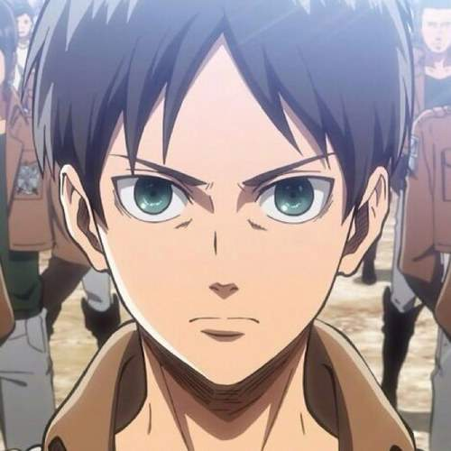
擁有強韌的精神力與非凡的行動力。從小受阿爾敏的影響，對牆壁外的世界擁有比任何人都要高的憧憬，從小便立志要加入調查軍團，進擊的巨人、始祖巨人、戰錘巨人的繼承人
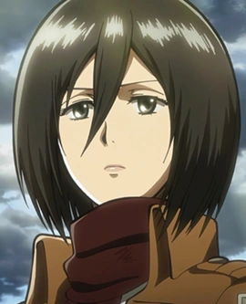
艾連的青梅竹馬，兩人經常一起行動，沉默寡言、表情稀少的少女，訓練兵團104期第1名畢業，擁有優秀的身體能力與戰鬥技術，訓練兵時期便獲得教官的高度評價，被認為是十年難得一見的天才
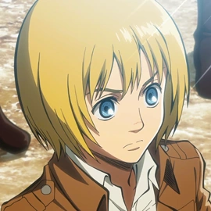
艾連與米卡莎兒時的玩伴，對牆外的世界抱有強烈的憧憬，瑪利亞城牆奪還戰中，阿爾敏打入巨人脊髓液巨人化變成無腦巨人並吃下貝爾托特繼承了超大型巨人
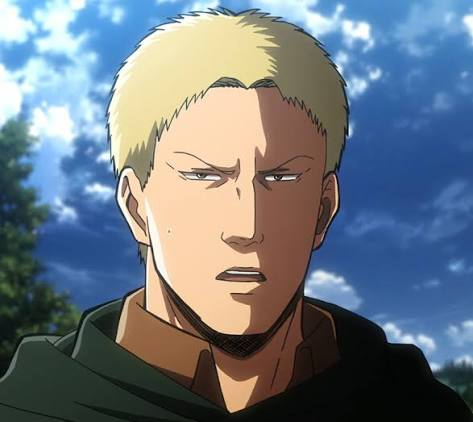
出生於瑪雷的收容區，和貝爾托特及亞妮作為戰士，訓練兵團104期第2名畢業，盔甲巨人的繼承人
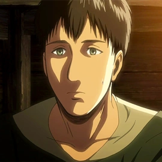
訓練兵團104期第3名畢業，掌握了一切的技巧，是眾多士兵中最有潛力的一個，但缺乏積極性，經常將事情推給其他人，超大型巨人的繼承人
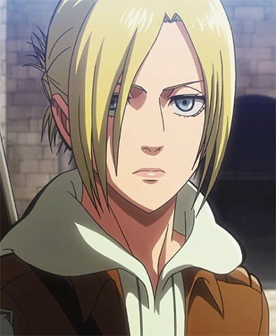
訓練兵團104期第4名畢業，擁有高超的對人格鬥術，身型不高卻可輕易將成年男子制伏，女巨人的繼承人
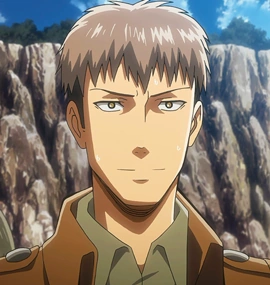
訓練兵團104期第6名畢業，進入訓練兵團初期以加入憲兵團為志願，在托洛斯特區奪回戰結束後，決定加入調查兵團
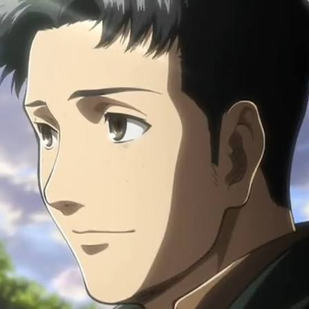
訓練兵團104期第7名畢業，畢業後，以加入憲兵團為志願，但在托洛斯特區奪回戰中遭到殺害
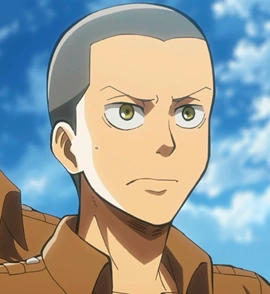
訓練兵團104期第8名畢業，一開始以加入憲兵團為志願，但畢業當晚，被艾連的演說感動後改以加入調查兵團為志願
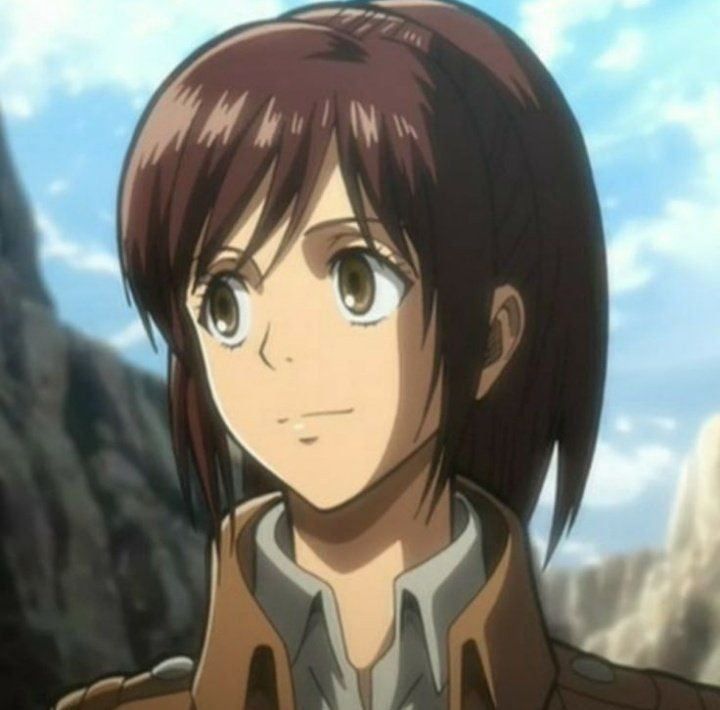
第104期訓練兵團第9名畢業，反對在瑪利亞之牆遭破壞後，族人因進入森林的外人來搶奪土地和糧食而放棄打獵，對一族的狩獵傳統感到驕傲
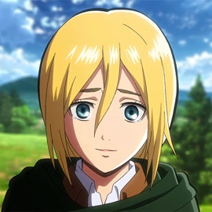
本名為希斯特莉亞·雷斯，為貴族後裔，三年前被捲入族人的紛爭而隱姓埋名，以假名「克里斯塔·連茲」被趕去當訓練兵，並以訓練兵團104期第10名畢業
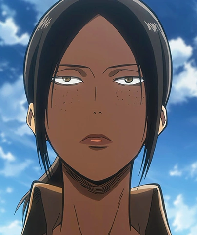
擁有銳利的眼睛，臉上長著雀斑，黑髮高個子的少女，通曉牆內地區以外的語言，身上有許多謎，實際年齡並不像外表一樣，之後說明自己在牆外待了至少60年，顎之巨人的繼承人
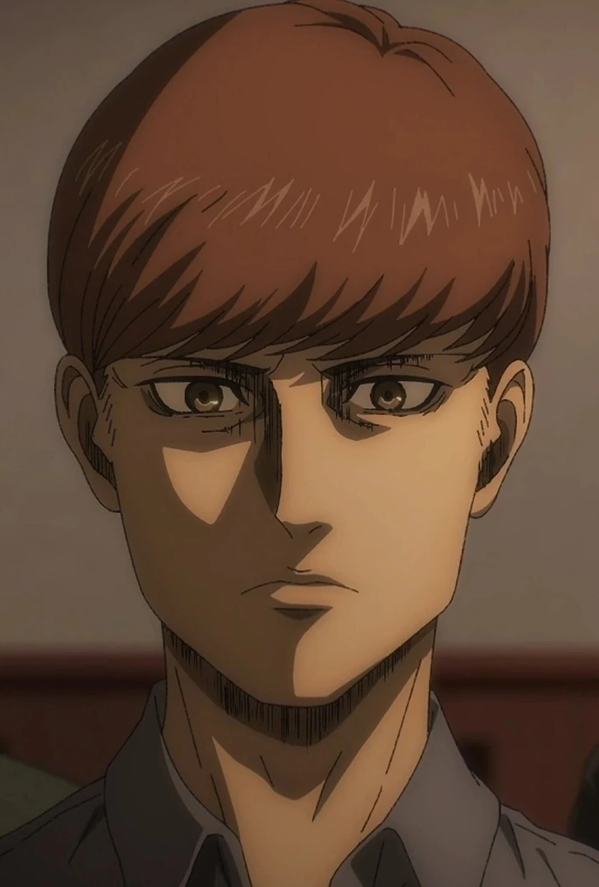
原為駐屯兵團成員，在調查兵團推翻舊王政、革命取得成功後，為被理想打動而加入兵團的新兵之一，日後葉卡派實際掌權者
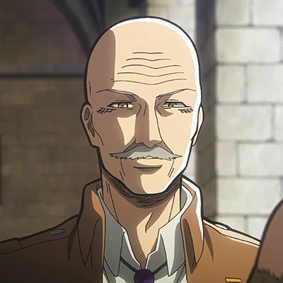
為駐紮軍團包含托洛斯特區在內，南側領土的最高總司令
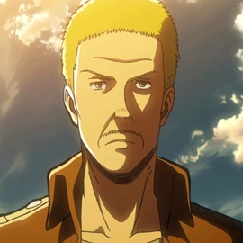
原為一名整天爛醉如泥的駐紮軍團成員之一，巨人入侵希干希納區的五年後，已成為駐紮軍團的工兵部隊隊長
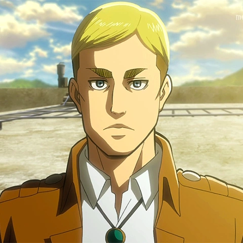
調查軍團第13屆團長，擁有過人的判斷力以及指揮能力，行動及考慮總是想得比任何人還要深遠，就連軍團裡資歷深的老兵也沒能理解太多，可以為了牆內全人類的生存，選擇捨棄100個同伴的性命
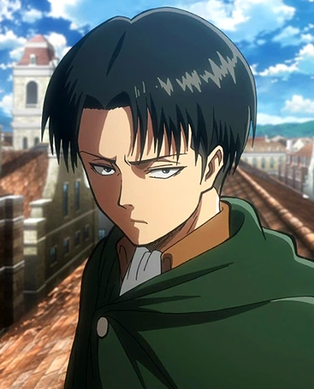
擁有「人類最強的士兵」之稱號，一人之戰力就抵得過一整個旅團，有超嚴重潔癖，對打掃的要求非常高
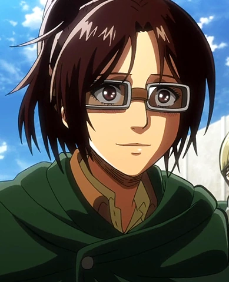
原調查軍團分隊長之一，後為第14任調查軍團團長，有著強烈的熱情及好奇心，在某次作戰中踢開3公尺等級之巨人的頭時，意外地發現巨人之軀體異常的輕，對此深深抱持著疑問，想找出其中的原因，對於自己主持的巨人實驗及相關研究有十足之狂熱
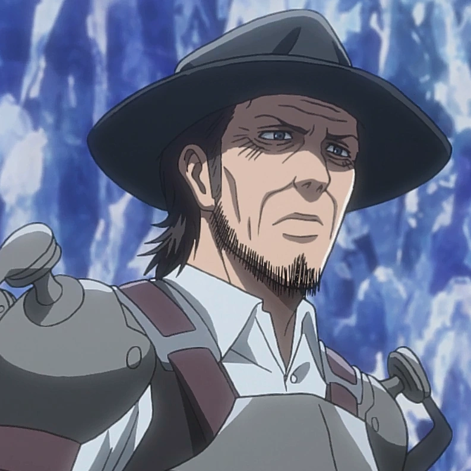
中央憲兵團對人壓制部隊隊長。是里維的舅舅，一度成為王都的殺人魔，有超過100名憲兵被割喉，被稱作「割喉者肯尼」
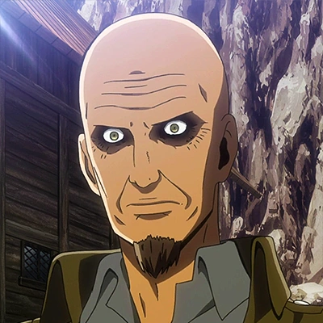
曾任職調查軍團第12屆團長，擔任訓練兵團第104期的教官
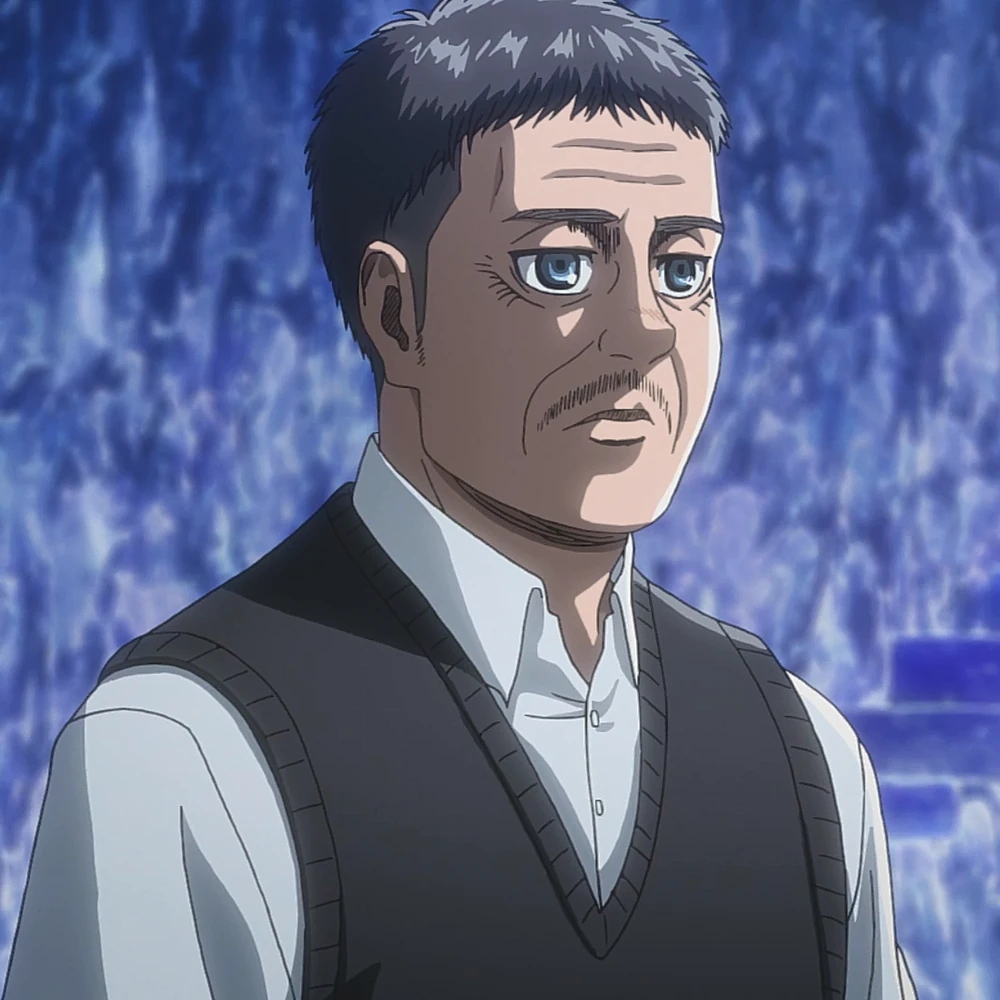
曾為羅斯家的家長，希斯特莉亞的親生父親，當時城牆內實質上的最高指揮者。
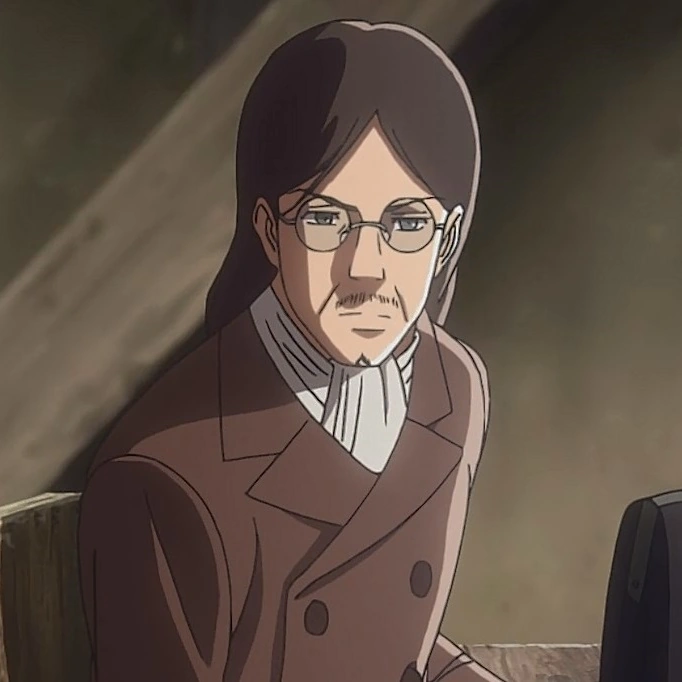
卡露拉·葉卡的丈夫、艾連的父親，米卡莎的養父，在瑪利亞之牆被突破幾天後，他在雷斯家族領地的教堂，用巨人之力與芙莉妲·雷斯展開戰鬥，並成功吞噬她，奪走始祖巨人之力
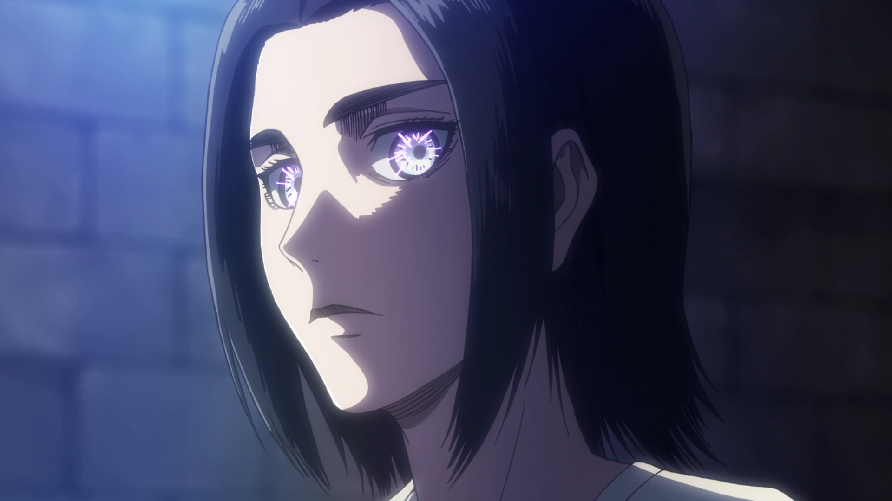
羅德·雷斯的長女、希斯特莉亞同父異母的姐姐，繼承叔父烏利的巨人之力成為牆內實際的女王
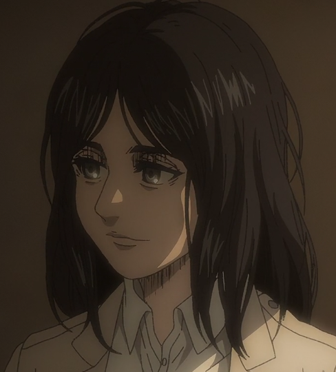
瑪雷的艾爾迪亞戰士隊成員，繼承九大巨人之中的車力巨人之力，一開始被調查兵團視為奇形種，直到後面證實其為智慧巨人
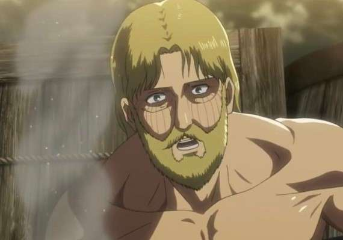
萊納和貝爾托特的長官，艾連的同父異母兄長，野獸巨人的繼承人
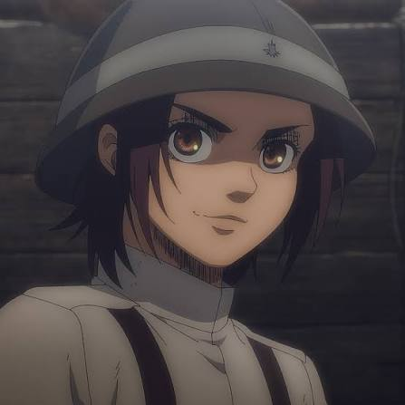
瑪雷年輕一代的艾爾迪亞戰士的候補生，萊納的表妹，從小因被教導而鬥志高昂，希望獲選繼承身為親戚萊納的盔甲巨人
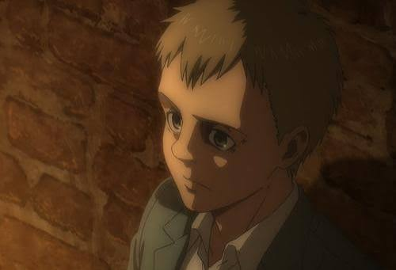
瑪雷年輕一代的艾爾迪亞戰士，顎之巨人的繼承人